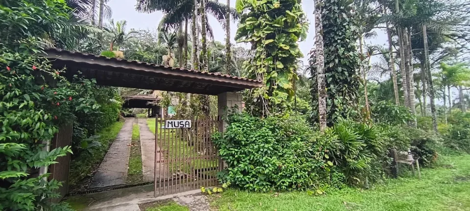

Pousada Musa
Refúgio na Mata Atlântica & Observação de Aves
Observação
de Aves
Cercada por árvores frutíferas e pela Mata Atlântica, a Musa tem um comedouro movimentado e jardins que atraem aves ao longo do dia. Saíras, colhereiros e tiês-sangue já foram fotografados na região.
Nossas Suítes
Suítes confortáveis, com camas elogiadas por quem já se hospedou e banheiros novos. Um lugar para desacelerar, ouvir os pássaros e dormir bem.
Os valores, a disponibilidade e os detalhes de cada acomodação são confirmados diretamente pelo WhatsApp.
Experiências
Clique em cada experiência para ver detalhes e fotos.
A Musa em imagens
Clique em uma foto para ampliar.
“As suítes são ótimas, camas confortáveis, banheiro novo. Muitas árvores de frutas que atraem diversos pássaros lindos de ficar observando.”
“Pousada agradável e acolhedora. Comida boa. Eu fotografo pássaros e o lugar é ótimo pra isso. Comedouro bem movimentado com aves da Mata Atlântica.”
Depoimentos publicados no Google Maps. Ver no Google.
Onde estamos
Endereço
Rod. Pref. Casemiro Teixeira, Km 48
Engenhos, Iguape/SP · 11920-000
Plus Code 8FVH+QW
Contato
(11) 95299-1990
WhatsApp da pousada
Mapa do Google. Toque em “Traçar rota” para abrir no aplicativo.
Estamos na Rodovia Prefeito Casemiro Teixeira, Km 48, Engenhos, Iguape/SP (CEP 11920-000), no litoral sul de São Paulo. O Plus Code é 8FVH+QW. Use o botão “Traçar rota” acima para abrir o caminho no Google Maps.
A pousada fica cercada por Mata Atlântica e árvores frutíferas, com um comedouro movimentado. Saíra-sete-cores, colhereiro e tiê-sangue já foram fotografados na pousada e na região. As primeiras horas do dia costumam ser as melhores para observar. Leve câmera ou binóculo.
Clique em “Reservar” e preencha datas, número de hóspedes e seu nome. O site abre o WhatsApp com a mensagem pronta. Valores, disponibilidade e detalhes da acomodação são confirmados no atendimento. Não há pagamento pelo site.
Sim. A Pousada Musa é uma empresa que acolhe a comunidade LGBTQ+, conforme informado na listagem do Google.